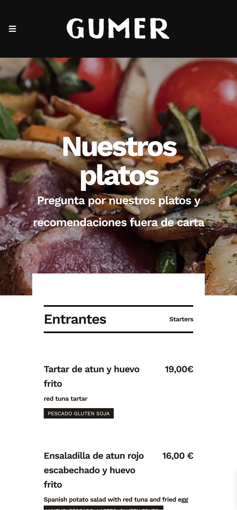
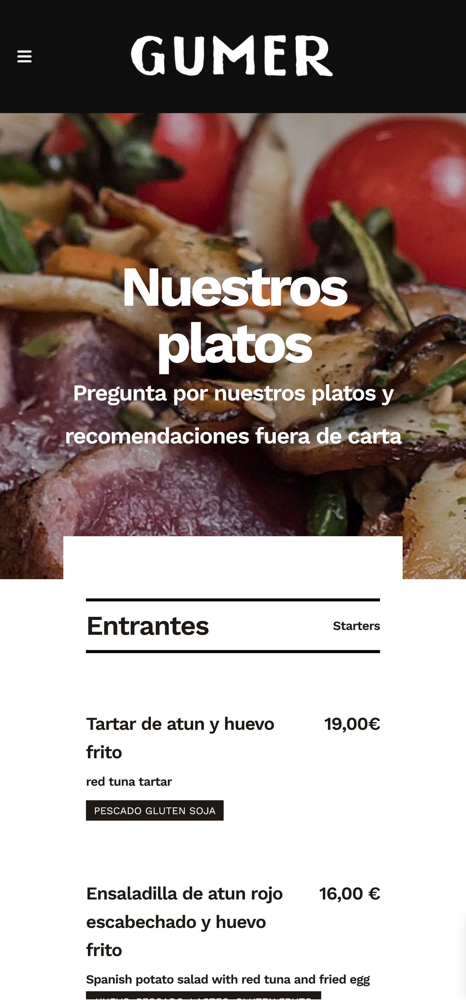
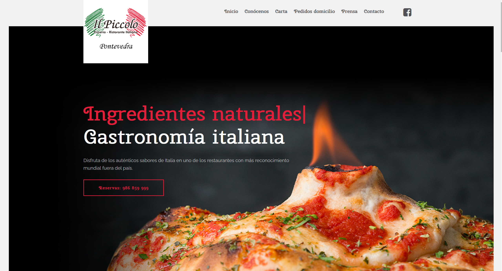
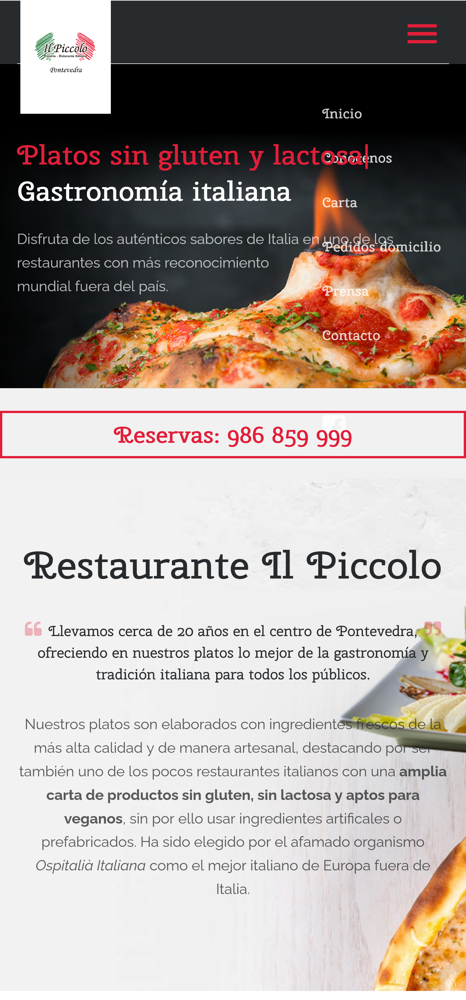

Informe de Desarrollo Web para la Cafetería El Nao
1. Web que voy a hacer. ¿Por qué?
La web que voy a hacer es para un bar-cafetería ubicado en Marín, Pontevedra, llamado El Nao. Esta web es necesaria porque actualmente el establecimiento no dispone de presencia online más allá de Facebook, y considero que tener una página web es fundamental para dar a conocer el negocio y facilitar el acceso a la carta y otra información relevante para los clientes.
2. Objetivos y público objetivo
El objetivo principal de la web será poner a disposición de los clientes la carta del establecimiento, así como proporcionar información general, como la ubicación, horarios, contacto, etc. La página estará orientada a los habitantes de Marín, y a turistas que visiten la localidad...
3. URLs de webs de la misma temática
A continuación se presentan tres webs de establecimientos en la zona de Pontevedra:
1. Opulpeiro
El diseño de la web que de un vistazo el usuario sepa dónde debe pinchar para acceder a la información más relevante: el menú y las reservas.
Cabe mencionar la buena adaptatividad para soportes móviles, el menú de la parte superior se convierte en un desplegable...
2. Gumer
Un ejemplo análogo al anterior, con la diferencia de que el acceso a la carta es inmediato, más conveniente al ser un restaurante.
En esta web el logo también se adapta en soporte móvil...
 

3. Ristorante Il Piccolo
El siguiente ejemplo no introduce ninguna novedad. Incluso podría ser reprochable cómo se muestra el logo...
  El patrón es evidente, el logo en la parte superior izquierda, un menú desplegable con las secciones de la web...
Y una página principal con una imagen de algún plato atractivo que levante el apetito.
Criterios de comparación
Al comparar estas webs, he definido los siguientes criterios:
- Claridad en la información: Debe ser muy accesible, a primera vista se debe poder encontrar la carta, el apartado de contacto, horarios...
- Diseño visual: Debe ir acorde con la estética y filosofía del establecimiento.
- Accesibilidad: Debe ser adaptativa para facilitar la accesibilidad desde distintos dispositivos. Quizás se podría pensar en la opción de traducir la página al inglés con un botón, por la posibilidad de que al establecimiento lleguen turistas...
4. Secciones y estructura (relación jerárquica de las secciones)
Las webs comparten una estructura jerárquica clara y sencilla, descrita a continuación:
- Página Principal: Breve presentación con información sobre horarios e imágenes del establecimiento.
A partir de esta, se accede fácilmente a los siguientes apartados: - Carta: Menú completo, con descripciones de los productos y precios.
- Sobre nosotros: Información sobre el establecimiento, su historia y filosofía.
- Ubicación: iframe con la localización del establecimiento.
- Contacto: Formulario de contacto y número de teléfono.
- Redes Sociales: Accesibles a través del/los iconos de las mismas.